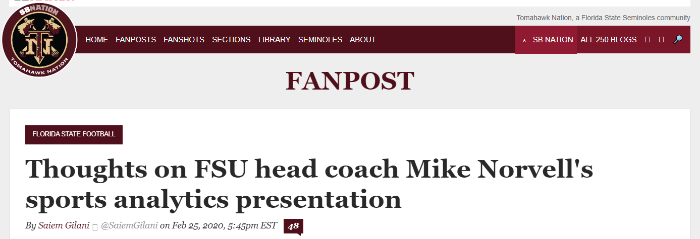

FSU Sports Analytics Series
About me
Saiem Gilani - Lead engineer and founder of the SportsDataverse
Background
Born and raised a Seminole and a proud Tallahassee native. I am an FSU alumnus in mathematics and went to graduate school at Georgia Tech for analytics. My general domain of work is machine learning and data science with a current focus on sports.
Started meeting great folks online
Simultaneously, I started working with the {cfbscrapR} package (now archived) to help write analytics driven articles.
I would not be here without my collaborators from the cfbscrapR team:

I quickly became involved with contributing to my first open-source package on GitHub, eventually becoming a co-author. I then developed the successor to the package, {cfbfastR}.

The SportsDataverse
An organization trying to make the sports data and analytics industry more diverse, inclusive, and accessible by providing high-quality resources for end-users and opportunities for practical code skill development for those that join the effort
üí° + üíª + üìàA set of packages for loading and scraping sports data in R, Python, and Node.js with focus placed on play-by-play data
 +
+  +
+ 
Our progress so far
20+ R packages with over a dozen sports leagues covered.
Pro Leagues
- NBA
- WNBA
- NBA G-League
- MLB
- NHL
- Premier Hockey Federation
- NWSL
- A boatload of soccer leagues
Collegiate Leagues
- College Football
- Men’s College Basketball
- Women’s College Basketball
- College Baseball
- College Softball
- College Football Recruiting
- College Basketball Recruiting
Our progress so far +
Access to loadable SDV-provided data and functions in the sportsdataverse python module and access to ESPN endpoints. Additional modules include: sportypy, collegebaseball, nwslpy, and recruitR-py
Access to ESPN endpoints (among other websites) via the sportsdataverse node.js module for easy web application development.
Get on GitHub! 
Sign up for an account on GitHub.com
If you’re a student, sign up for the extremely generous GitHub Student Developer Pack
Start sharing your code and projects online so that people may see them
Build out a portfolio of interesting research topics, data visualizations, web applications
Some Inspirations and Heros
My beautiful and brilliant wife, Madiha, and my family
My collaborators from the cfbfastR team:
- Akshay Easwaran
- Jared Lee
- Eric Hess

The creator of CollegeFootballData.com:
- Bill Radjewski

The nflverse team:
- Sebastian Carl
- Ben Baldwin
- Tan Ho

Learn more
Game on Paper - for a look at the
sportsdataversepython package serving live advanced stats with expected points and win probability metrics.